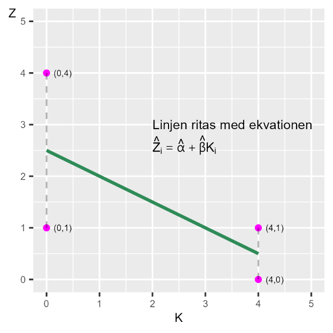
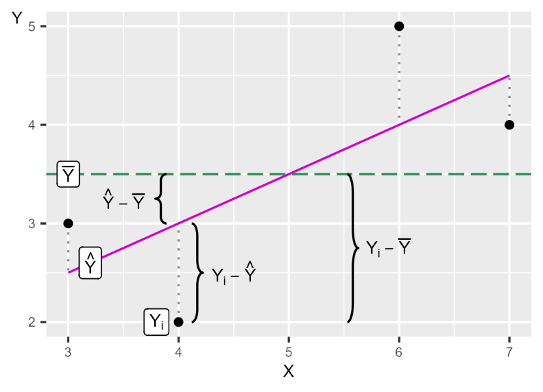

32 En modell till
32.0.1 Begrepp
- Från regressionsmodellen \(Y = a + bX + V\) kan vi beräkna följande:
-
Residualernas kvadratsumma (engelska residual sum of squares, SSR):
\(SSR = \sum_{i}^{n}\widehat{V_{i}^{2}} = \sum_{i}^{n}\left( Y_{i} - \widehat{Y_{i}} \right)^{2}\) - Kvadratsumman av den förklarade variationen (engelska sum of squares explained, SSE): \(SSE = \sum_{i}^{n}\left( \widehat{Y_{i}} - \overline{Y_{i}} \right)^{2}\)
- Totalsumman av kvadrater (engelska total sum of squares, SST): \(SST = SSE + SSR\).
- Determinationskoefficienten (på engelska coefficient of determination), \(R^{2}\): andel av variationen i \(Y\) som kan förklaras av regressionsmodellen, det vill säga variationen i den förklarande variabeln \(X\). \(R^{2}\) antar värden mellan 0 och 1, där 0 = modellen förklarar ingenting och 1 = modellen förklarar all variation. \(R^{2} = \frac{SSE}{SST} = \frac{SST - SSR}{SST}\).
32.0.2 Teori
Vi har i tidigare avsnitt introducerat minstakvadratmetoden och gått igenom delar av matematiken bakom. Nu ska vi repetera vad vi lärt oss genom att räkna på en ny regressionsmodell.
32.0.2.1 En ny modell
Låt oss nu estimera följande regressionsmodell:
\[Z = \alpha + \beta K + \epsilon \tag{1}\]
där \(Z\) och \(K\) är variabler, \(\alpha\) och \(\beta\) är koefficienterna som vi ska estimera utifrån minstakvadratmetoden och \(\epsilon\) är feltermen. En del av poängen här är att vi nu använder andra bokstäver men att matematiken ändå är densamma. Låt oss repetera vår metod: 1. Vi har en idé om att \(K\) samvarierar med \(Z\). Detta är ett påstående om samvariation, inte en teori om ett orsakssamband. Samvariation kan i sin tur vara baserad på en teori om ett orsakssamband, vilket i så fall i regel brukar formuleras som att den förklarande variabeln \(K\) orsakar förändringar i den förklarade variabeln \(Z\). 2. Vi formulerar vårt påstående om samvariation i form av en regressionsmodell i ekvation 1. 3. Vi använder minstakvadratmetoden för att hitta estimatorerna (ekvationerna) för \(\widehat{\alpha}\) och \(\widehat{\beta}\). Hattsymbolen \(\widehat{}\) indikerar att det är estimerade versioner av koefficienterna \(\alpha\) och \(\beta\) som finns i populationen. 4. Efter att vi har estimerat koefficienterna kan vi estimera regressionslinjens ekvation \(\widehat{Z} = \widehat{\alpha} + \widehat{\beta}K\) och rita ut regressionslinjen i ett diagram. Värdena för \(\widehat{Z}\) anger regressionslinjens värden på den vertikala axeln. 5. Residualen \(\widehat{\epsilon} = Z - \widehat{Z}\) är det vertikala avståndet (y-axeln) mellan regressionslinjens \(\widehat{Z}\) och respektive observation \(Z\).
32.0.2.2 Estimera koefficienterna
Låt oss nu estimera koefficienterna \(\alpha\) och \(\beta\). Observationerna för variablerna \(Z\) och \(K\) beskrivs i tabell 1, tillsammans med beräkningarna vi behöver för våra beräkningar.
Tabell 1. Underlag för att estimera koefficienterna \(\mathbf{\alpha}\) och \(\mathbf{\beta}\).
| Observation i | \(Z_{i}\) | \(K_{i}\) | \(Z_{i} - \overline{Z}\) | \(K_{i} - \overline{K}\) | \(\left( Z_{i} - \overline{Z} \right)\left( K_{i} - \overline{K} \right)\) | \(\left( K_{i} - \overline{K} \right)^{2}\) |
|---|---|---|---|---|---|---|
| \(1\) | \(1\) | \(0\) | \(-0{,}5\) | \(-2\) | \(1\) | \(4\) |
| \(2\) | \(4\) | \(0\) | \(2{,}5\) | \(-2\) | \(-5\) | \(4\) |
| \(3\) | \(0\) | \(4\) | \(-1{,}5\) | \(2\) | \(-3\) | \(4\) |
| \(4\) | \(1\) | \(4\) | \(-0{,}5\) | \(2\) | \(-1\) | \(4\) |
| Summa | \(6\) | \(8\) | \(-8\) | \(16\) |
För lutningskoefficienten \(\widehat{\beta}\) får vi:
\[\widehat{\beta} = \sum_{i}^{}{\frac{\left( K_{i} - \overline{K} \right)\left( Z_{i} - \overline{Z} \right)}{\sum_{i}^{}\left( K_{i} - \overline{K} \right)^{2}} = - \frac{8}{16} = - \frac{1}{2}} \tag{2}\]
För koefficienten \(\widehat{\alpha}\):
\[\widehat{\alpha} = \overline{Z} - \widehat{\beta}\overline{K} = 1,5 - \left( - \frac{1}{2} \right)2 = 2,5 \tag{3}\]
Att \(\widehat{\beta} < 0\) betyder att regressionslinjens lutning är negativ och att vi har en negativ samvariation mellan de fyra observationerna för \(Z\) och \(K\). Vi kan nu ställa upp en ekvation för predikterade \(\widehat{Z}\):
\[\widehat{Z_{i}} = \widehat{\alpha} + \widehat{\beta}K_{i} = 2,5 - \frac{1}{2}K_{i} \tag{4}\]
Med hjälp av denna och de observerade värdena för variabeln \(K\) kan vi estimera fyra värden för predikterade \(\widehat{Z}\), vilka beskrivs i tabell 2. Med \(\widehat{Z}\) kan vi sedan estimera de fyra residualerna \(\widehat{\epsilon}\), vilka beskrivs i samma tabell. De fyra observationerna och regressionslinjen som kan ritas med ekvation 4 illustreras i figur 1.
Tabell 2. Beräkningar för att estimera \(\widehat{Z}\) och \(\widehat{\epsilon}\)
| Observation i | \(Z_{i}\) | \(K_{i}\) | \(\widehat{Z_{i}}\) | \(\widehat{\epsilon_{i}} = Z_{i} - \widehat{Z_{i}}\) |
|---|---|---|---|---|
| \(1\) | \(1\) | \(0\) | \(2{,}5\) | \(-1{,}5\) |
| \(2\) | \(4\) | \(0\) | \(2{,}5\) | \(1{,}5\) |
| \(3\) | \(0\) | \(4\) | \(0{,}5\) | \(-0{,}5\) |
| \(4\) | \(1\) | \(4\) | \(0{,}5\) | \(0{,}5\) |
Figur 1. Regressionslinjen för modell \(Z = \alpha + \beta K + \epsilon\)

Förklaring: Vi har regressionsmodellen \(Z = \alpha + \beta K + \epsilon\). Utifrån observationerna för variablerna \(Z\) och \(K\) och minstakvadratmetoden estimerar vi koefficienterna \(\widehat{\alpha}\) och \(\widehat{\beta}\). De estimerade koefficienterna och observationerna från variabel \(K\) kan vi använda för att estimera \(\widehat{Z}\), vilket ger värdena för denna variabel längs med regressionslinjen.
32.0.2.3 Hur väl passar regressionsmodellen mot data?
För att jämföra hur väl en regressionsmodell passar de data den syftar till att beskriva mönstret för finns det flera metoder. En viktig del i detta är att jämföra residualerna, det vill säga avståndet mellan de data vi använt i vår förklarade variabel \(Y\) och de predikterade värdena för samma variabel \(\widehat{Y}\).
Om vi har en regressionsmodell med förklarad variabel \(Y\) och feltermen \(V\) där residualen beräknas \(\widehat{V} = Y - \widehat{Y}\) kan vi till exempel jämföra residualernas kvadratsumma (engelska sum of squared residuals, SSR):
\[SSR = \sum_{i}^{n}\widehat{V_{i}^{2}} = \sum_{i}^{n}\left( Y_{i} - \widehat{Y_{i}} \right)^{2} \tag{5}\]
Vi kan tänka på SSR som mängden variation i förklarade variabeln \(Y\) som inte kan förklaras av regressionsmodellen.
Ett annat användbart mått är kvadratsumman av den förklarade variationen (engelska sum of squares explained, SSE):
\[SSE = \sum_{i}^{n}\left( \widehat{Y_{i}} - \overline{Y_{i}} \right)^{2} \tag{6}\]
SSE kan beskrivas som den variation i \(Y\) som kan förklaras, eller tas bort, av regressionsmodellen. Begreppet “förklaras” innebär i detta sammanhang inte nödvändigtvis “kausal förklaring”.
Totalsumman av kvadrater (engelska total sum of squares, SST) är summan av SSR och SSE. SST kan tolkas som mängden variation som förekommer i \(Y\) innan regressionsmodellen estimeras. SST skrivas som summan av den kvadrerade differensen mellan observerade \(Y_{i}\) och medelvärdet \(\overline{Y}\):
\[\begin{align} SST &= SSE + SSR \tag{7}\\ \sum_{i}^{n}\left( Y_{i} - \overline{Y} \right)^{2} &= \sum_{i}^{n}\left( \widehat{Y_{i}} - \overline{Y_{i}} \right)^{2} + \sum_{i}^{n}\left( Y_{i} - \widehat{Y_{i}} \right)^{2} \end{align}\]
32.0.2.4 Skillnaden mellan SSR, SSE och SST
Ett sätt att illustrera skillnaderna mellan SSR, SSE och SST ges i figur 2. Vi använder här återigen de fyra observationerna för \(X = 3,4,6,7\) och \(Y = 2,3,4,5\) som vi använde i vårt första exempel på regressionsanalys (se avsnitt 2.4). I diagrammet i figur 1 markerar vi residualerna med streckade vertikala linjer mellan \(Y_{i}\ \) och regressionslinjens \(\widehat{Y_{i}}\).
Figur 2. Differenserna mellan \(\overline{Y}\), \(\widehat{Y}\) och \(Y_{i}\)

Förklaring: Figuren illustrerar hur avstånden i diagrammet motsvaras av differenser mellan värdena för observationerna \(Y_{i}\), deras medelvärde \(\overline{Y}\) och estimerade \(\widehat{Y}\).
32.0.2.5 Determinationskoefficienten, \(R^{2}\)
Utifrån kvadratsummorna kan vi skatta determinationskoefficienten (på engelska coefficient of determination), vilken brukar skrivas som \(R^{2}\):
\[R^{2} = \frac{SSE}{SST} = \frac{SST - SSR}{SST} = 1 - \frac{SSR}{SST} = 1 - \frac{\sum_{i}^{n}\left( Y_{i} - \widehat{Y_{i}} \right)^{2}}{\sum_{i}^{n}\left( Y_{i} - \overline{Y} \right)^{2}} \tag{8}\]
\(R^{2}\) mäter hur stor andel av variationen i den förklarade variabeln, till exempel \(Y\), som kan förklaras av regressionsmodellen och variationen i den förklarande variabeln, till exempel \(X\). \(R^{2}\) kan anta värden mellan 0 och 1.
\(R^{2} = 0\) betyder att ingenting av variationen i \(Y\) kan förklaras av regressionsmodellen och variationen i \(X\). \(R^{2} = 1\) betyder att all variation i variabel \(Y\) förklaras av regressionsmodellen och variationen i variabel \(X\).